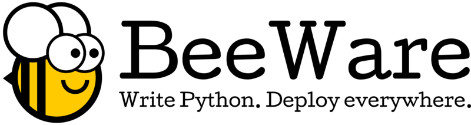

The BeeWare Project
BeeWare is a collection of projects that can be used to help develop, debug and launch Python software. Each tool follows the Unix philosophy of doing one thing well. Each tool can be used in isolation, or they can be chained together to provide a rich set of programming tools.
If you want to get involved contributing to the BeeWare project, there are guides to walk you through the process. Contributions are welcomed from everyone - of all levels of experience, and areas of expertise, and mentoring is availalbe. All contributors are eligible to receive a BeeWare challenge coin.
The BeeWare project is also seeking your financial assistance. If you use the BeeWare project tools, or would like to see them develop, I encourage you to become a financial member of the project.
Django

Django is a high-level Python Web framework that encourages rapid development and clean, pragmatic design. Built by experienced developers, it takes care of much of the hassle of Web development, so you can focus on writing your app without needing to reinvent the wheel. It’s free and open source. It's the web framework for perfectionists with deadlines.